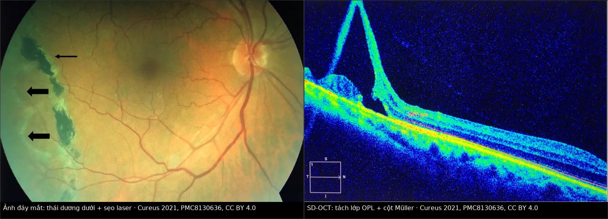
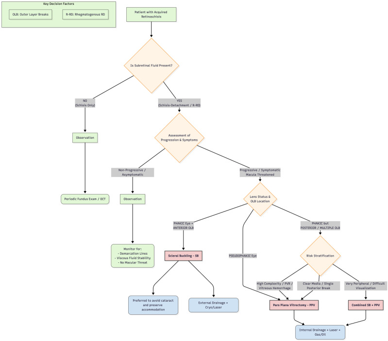
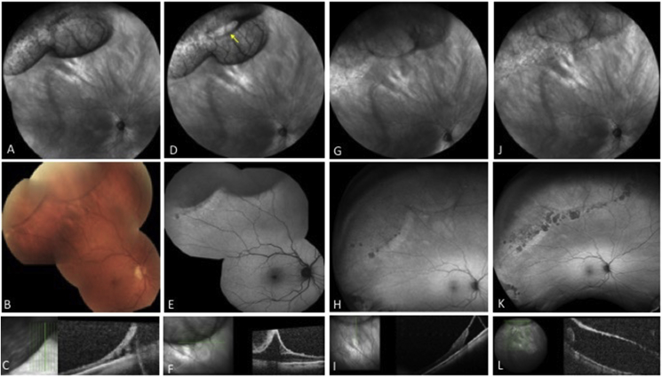
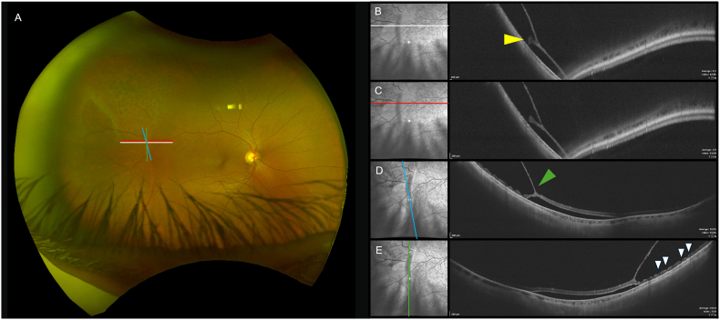
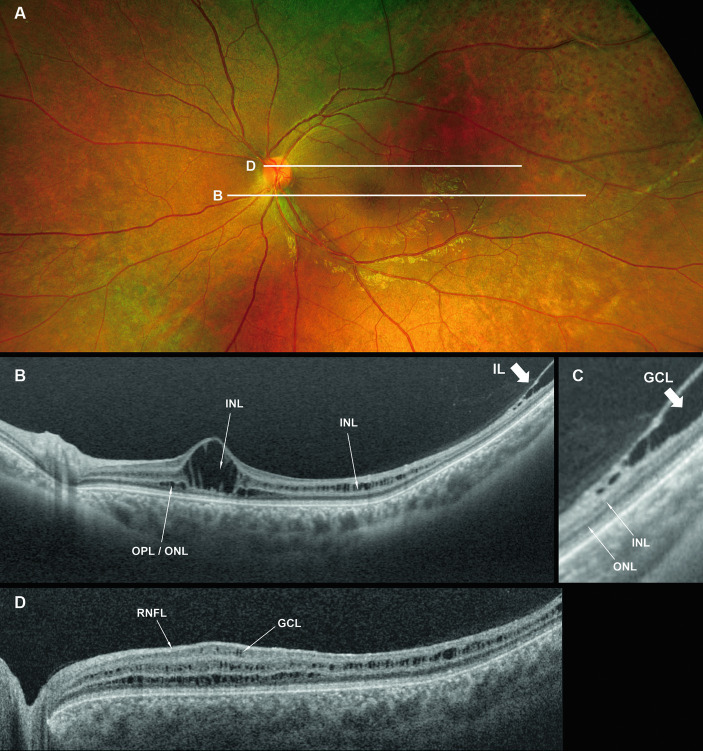

1518 — Tách lớp võng mạc ngoại vi so với bong võng mạc / Peripheral retinoschisis versus retinal detachment
Tags: pattern:tach-lop-vong-mac pattern:retinoschisis pattern:schisis-detachment pattern:bong-vong-mac pattern:voi-day-khong-dinh-dia-thi pattern:lo-rach-vong-mac pattern:xuat-huyet-dich-kinh vung:mat vung:vong-mac vung:ora-serrata anatomy:OPL anatomy:GCL anatomy:ora-serrata protocol:soi-day-mat-an-sclera protocol:UWF-OCT protocol:SS-OCT protocol:FAF protocol:hong-ngoai protocol:sieu-am-B-scan score:XLRS-grade incidentaloma:tach-lop-vong-mac
Mức chắc chắn (certainty): tổng hợp y văn (literature synthesis) — dựng từ tổng quan hệ thống + thuật toán 2026 về tách lớp mắc phải và bong võng mạc liên quan tách lớp (Med Sci 2026, PMC13028219, CC BY 4.0 — dùng hình thuật toán), ca lâm sàng có SD-OCT kinh điển (Cureus 2021, PMC8130636, CC BY 4.0 — dùng ảnh), loạt 27 mắt so sánh FAF – hồng ngoại – OCT (Am J Ophthalmol Case Rep 2020, PMC7125323, CC BY-NC-ND 4.0 — dùng ảnh nguyên bản), ca UWF-OCT 55 tuổi (Am J Ophthalmol Case Rep 2026, PMC13316662, CC BY-NC-ND 4.0 — dùng ảnh nguyên bản), 19 mắt XLRS (Front Med 2023, PMC10687576, CC BY 4.0 — dùng ảnh), đoàn hệ 52 bệnh nhân XLRS (Acta Ophthalmol 2025, PMC11810562, CC BY 4.0 — chỉ đọc số) và 3 ca rách lớp ngoài khổng lồ (Oman J Ophthalmol 2025, PMC12604721, CC BY-NC-SA 4.0 — chỉ đọc số). Nhóm không có bệnh nhân của mình; chỗ suy luận ghi [suy luận]. Không ghi tên tác giả — attribution dùng tạp chí + năm + PMCID.
Vị trí trong thư viện: 1481 chốt lỗ rách cấp chưa bong; 1487 chốt bong võng mạc ở mắt pseudophakic; 1516 chốt tách lớp hoàng điểm do co kéo ở mắt cận thị; 1484 chốt bong hắc mạc. Bài này trả lời khoảng trống ở chu biên: vòm trong suốt ở võng mạc ngoại vi là tách lớp hay bong? — và khi nào một tách lớp lành tính bỗng trở thành bong võng mạc thật.
Câu chốt — sáu con số phải thuộc: (1) Tách lớp mắc phải gặp ở 1,65–7,00% người trên 40 tuổi (PMC8130636), nhưng tổng quan 2026 báo tới 4–22% (PMC13028219) — khác biệt do định nghĩa và cách phát hiện, không phải do dân số khác. (2) Tách lớp đơn thuần hầu như không tiến triển thành bong thật: chỉ 0,05% ca tách lớp thoái hóa phát triển thành bong võng mạc liên quan tách lớp (R-RD); đoàn hệ 218 mắt theo dõi trung bình 9 năm có 0 ca schisis-detachment khu trú tiến triển thành R-RD (PMC13028219). (3) Rách lớp trong gặp ở 50–70% ca và một mình nó lành tính — chỉ khi có rách lớp ngoài (hit 1) cộng rách lớp trong/co kéo dịch kính (hit 2) thì dịch lỏng mới vào khoảng dưới võng mạc (PMC13028219). (4) UWF-OCT bỏ sót tới 30% rách lớp ngoài nếu chỉ soi đáy mắt thường, vì rách nằm ra trước xích đạo hoặc bị vách trong che (PMC13028219). (5) Thành công sau một mổ R-RD chỉ 56,2–70% (thấp hơn hẳn bong võng mạc thường): đai củng mạc cho rách trước xích đạo 85–86%, PPV cho rách sau xích đạo 67%, PPV khi PVR > độ B: 0% (PMC13028219, bảng 3). (6) XLRS là kẻ bắt chước: 39–50% có tách lớp ngoại vi, 95–100% có hình nan hoa hoàng điểm, ERG sóng b giảm; tách lớp ngoại vi ở XLRS xảy ra ở lớp hạch (GCL), không phải lớp rối ngoài (PMC10687576, PMC11810562). Bẫy chết người: chọc/dẫn lưu "dịch dưới võng mạc" khi thực ra là khoang tách lớp chứa dịch nhầy — dịch không chảy, còn kim thì tạo rách lớp ngoài thật.
1. Tổng quan bệnh học – cơ chế hình ảnh (TẠI SAO)
1.1 Tách lớp là gì — và tách ở đâu
- Tách lớp võng mạc ngoại vi mắc phải (acquired/senile retinoschisis) là sự tách đôi võng mạc cảm giác do thoái hóa vi nang (microcystoid degeneration) hợp nhất lại, tạo khoang chứa dịch nhầy giữa lá trong (inner leaf) và lá ngoài (outer leaf) (PMC13028219, PMC8130636).
- Có hai thể mô học (PMC13028219):
- Thể điển hình (typical cystoid) — tách tại lớp rối ngoài (outer plexiform layer, OPL), vòm nhẵn hình thoi, giới hạn trước xích đạo, hiếm khi bong;
- Thể lưới/bóng nước (reticular/bullous) — tách nông hơn, tại lớp sợi thần kinh (NFL) hoặc lớp tế bào hạch (GCL), bóng nước, lan ra sau xích đạo, và chính là thể hay có rách lớp ngoài.
- Lá trong chứa mạch máu võng mạc và màng giới hạn trong (ILM); lá ngoài nằm sát biểu mô sắc tố (RPE) và là nơi rách lớp ngoài xuất hiện. Vì mạch máu nằm trong lá trong, khi tách lớp bóng nước, mạch máu đi theo vòm — đây là dấu lâm sàng mạnh nhất để phân biệt với bong võng mạc (mạch máu nằm trên màng bong, sát đáy) (PMC13028219).
- Vị trí hay gặp nhất là thái dương dưới (inferotemporal): 8/13 mắt trong loạt 27 mắt (PMC7125323); tổng quan cũng ghi nhận tương tự (PMC13028219). Bong võng mạc thật trong cùng loạt lại chủ yếu ở thái dương trên (PMC7125323) — một gợi ý định vị hữu ích nhưng không đủ để chẩn đoán.
1.2 Vì sao khoang tách lớp KHÔNG giống khoảng dưới võng mạc
- Bản chất dịch quyết định hình ảnh và tiên lượng. Khoang tách lớp chứa dịch nhầy giàu hyaluronic acid, do các tế bào võng mạc thoái hóa tiết ra; độ nhớt cao làm dịch không di chuyển theo tư thế, không chảy qua sclerotomy khi mổ, và chặn tiến triển dù có rách lớp ngoài (PMC13028219).
- Ngược lại, dịch kính hóa lỏng có độ nhớt thấp: một khi đi qua cả hai lớp (rách trong + rách ngoài), nó vào khoảng dưới võng mạc và gây bong tiến triển nhanh — đây là cơ chế "hai đòn" (two-hit) (PMC13028219).
- Trên OCT, dịch nhầy không phản xạ → khoang giảm phản xạ (hyporeflective); các cột Müller còn lại bắc ngang khoang → cấu trúc tăng phản xạ hình cột chạy từ lá trong xuống lá ngoài. Đây là dấu đặc hiệu (pathognomonic) của tách lớp, không có trong bong võng mạc mạn (PMC13028219, bảng 1).
- Vì sao tách lớp gây khiếm khuyết thị trường TUYỆT ĐỐI, còn bong võng mạc thường chỉ tương đối: tách lớp cắt đứt synapse giữa tế bào quang thụ và tế bào lưỡng cực tại OPL, nên tín hiệu mất hoàn toàn trên vùng tách; bong võng mạc chỉ đẩy võng mạc ra khỏi RPE, tế bào quang thụ còn sống một thời gian nên vùng bong thường chỉ giảm nhạy cảm (PMC13028219 mô tả scotoma tuyệt đối của tách lớp; PMC7125323 mô tả scotoma tương đối của bong). Đây là lý do đo thị trường có giá trị hơn đo thị lực để theo dõi tiến triển.
1.3 Vì sao ảnh trông như vậy — từng modality
- Đáy mắt màu/wide-field: vòm trong suốt, nhẵn, bóng, mạch máu nổi rõ trên vòm; không có nếp nhăn (corrugated) như bong; không có sắc tố trong khoang; có thể thấy "white-with-pressure" hoặc "snowflake" do di tích chân tế bào Müller (PMC13028219). Đường ranh giới sắc tố (demarcation line) ở bờ sau là dấu mạn tính/ổn định, không phải dấu hoạt động.
- FAF (fundus autofluorescence): võng mạc nâng lên đổi hướng ánh sáng và che RPE → vùng tổn thương thường giảm huỳnh quang (hypo-AF). Tuy nhiên không đặc hiệu: trong loạt 27 mắt, toàn bộ 13 mắt RS và 4 mắt schisis-detachment đều hypo-AF, và 9/10 mắt bong võng mạc cũng hypo-AF (PMC7125323) — tức FAF không phân biệt được ba thực thể, trái với câu "RS thường đồng huỳnh quang" trong một tổng quan khác (PMC13028219). Đây là mâu thuẫn nguồn có thật, ghi ở mục 7.
- Hồng ngoại (IR): bước sóng dài xuyên qua đục môi trường tốt hơn ảnh màu; vùng tách lớp giảm phản xạ (hyporeflective) với bờ rõ, mạch máu nổi rõ, và lỗ lớp ngoài có thể thấy trên IR mà không thấy trên FAF (PMC7125323). IR là modality nhanh, không tiếp xúc, hữu ích khi bệnh nhân không nhìn cố định được.
- Siêu âm B-scan: tách lớp cho vòm dày, nhẵn, không di động, không bám vào đĩa thị; bong võng mạc cho màng mỏng, gấp nếp, di động, và dính vào đĩa thị/ora. B-scan dùng khi đục thể thủy tinh/dịch kính che đáy mắt; không thấy rách lớp ngoài trên B-scan (PMC13028219, PMC8130636).
- OCT: là chuẩn vàng. SD-OCT thường chỉ phủ 30–50°, nên không tới được vùng ngoại vi nơi bệnh bắt đầu; UWF-OCT/SS-OCT bước sóng ~1050 nm quét được tới chu biên, xuyên qua lá trong đục và dịch nhầy, cho thấy vách tách, độ dày lá trong, cột Müller, rách lớp ngoài và dịch dưới võng mạc (PMC13028219, PMC13316662).
1.4 Vì sao đa số ổn định — và vì sao một số ít thì không
- Đa số ổn định: trong loạt theo dõi 27 mắt, 9/10 bệnh nhân tái khám không tiến triển (thời gian theo dõi trung bình 53 tháng ở nhóm schisis-detachment) (PMC7125323); đoàn hệ 218 mắt của Byer không có ca schisis-detachment khu trú nào tiến triển thành R-RD trong 9 năm (PMC13028219 dẫn lại).
- Thiểu số tiến triển khi có "hai đòn": rách lớp ngoài đơn thuần → dịch nhầy rỉ vào khoảng dưới võng mạc tạo schisis-detachment (thường khu trú, bờ sắc tố, không di động); thêm rách lớp trong hoặc co kéo dịch kính → dịch lỏng vào → R-RD (di động, lan nhanh, có thể tới hoàng điểm) (PMC13028219).
- Cửa sổ tiến triển có thể rất ngắn: ca trong PMC7125323 cho thấy trình tự tách lớp → lỗ lớp ngoài mới → schisis-detachment trong vài tháng, và hình ảnh IR phát hiện lỗ ngoài trước FAF. Ca PMC13316662 còn cho thấy chỉ có lỗ lớp ngoài, KHÔNG có lỗ lớp trong, dưới co kéo của lá trong dày — nghĩa là "hai đòn" có thể chỉ cần một lỗ + lực kéo, không nhất thiết phải đủ hai lỗ.
2. Mẫu hình + chẩn đoán phân biệt theo vị trí (gamut)
2.1 Bốn mẫu hình của cùng một phổ
- Tách lớp đơn thuần (schisis only): vòm nhẵn, không dịch dưới võng mạc, không rách lớp ngoài; thị trường có khiếm khuyết tuyệt đối tương ứng; theo dõi.
- Schisis-detachment (không do rách): rách lớp ngoài nhỏ → dịch nhầy vào khoảng dưới võng mạc; bong khu trú, không di động, bờ sắc tố; thường tự giới hạn.
- R-RD (bong võng mạc liên quan tách lớp): rách cả hai lớp hoặc rách ngoài + co kéo mạnh; dịch lỏng, bong di động, lan nhanh, có thể bong hoàng điểm; 0,05% ca tách lớp (PMC13028219).
- Rách lớp ngoài khổng lồ (giant outer lamellar tear): thể hiếm, rách lớn bờ nhăn, kèm nhiều lỗ lớp trong, PVR sớm; thị lực lúc đến thường đếm ngón tay/bóng bàn tay; mổ khó, tái bong cao (PMC12604721).
2.2 Vị trí quyết định cách đọc
- Thái dương dưới, trước xích đạo: mẫu hình tách lớp điển hình; hay gặp thể OPL; rách lớp ngoài nếu có thường nhỏ và ra trước, rất dễ bỏ sót khi soi thường (PMC13028219).
- Thái dương trên, lan sau xích đạo: mẫu hình bong võng mạc nhiều hơn; nếu vẫn là tách lớp thì thường thể lưới/bóng nước, nguy cơ rách lớp ngoài cao hơn (PMC7125323, PMC13028219).
- Quanh ora serrata: nghĩ tới dialysis hoặc lỗ vô khuẩn do vỡ; tách lớp hiếm khi tới sát ora mà thường dừng trước ora.
- Sau cực/hoàng điểm: nếu gặp "tách lớp" ở hoàng điểm, phải nghĩ MTM ở mắt cận thị nặng (bài 1516) hoặc XLRS ở bé trai — không phải tách lớp thoái hóa chu biên.
2.3 Gamut chẩn đoán phân biệt
- Tách lớp thoái hóa mắc phải (điển hình/lưới) — người ≥ 40 tuổi, vòm nhẵn, mạch trong vòm, cột Müller.
- Schisis-detachment — dịch dưới võng mạc khu trú, bờ sắc tố, không di động.
- R-RD — bong di động, có rách hai lớp, lan nhanh.
- Bong võng mạc rách mạn (chronic RRD) — màng mỏng gấp nếp, dính đĩa thị, không cột Müller, đường ranh giới sắc tố.
- XLRS (tách lớp liên kết X) — bé trai, hai bên, nan hoa hoàng điểm, tách lớp ngoại vi ở GCL, ERG âm, tiền sử gia đình.
- Bong hắc mạc (choroidal detachment) — vòm dày, nhẵn, không dính đĩa thị, "kissing choroidals", hay sau mổ/hạ nhãn áp (bài 1484).
- Melanoma hắc mạc — khối đặc, hồi âm thấp bên trong trên B-scan, có mạch máu, có thể kèm bong thanh dịch.
- Thoái hóa dạng lưới (lattice degeneration) — dải teo mỏng, không nâng, có thể kèm lỗ nhỏ; không phải tách lớp.
- Dialysis ở ora — bờ võng mạc rời ora, thường sau chấn thương; không có vòm tách lớp.
- Bong thanh dịch/exudative — dịch di chuyển theo tư thế, không rách, tìm nguyên nhân (u, viêm, CSC).

Trái: vòm tách lớp thái dương dưới trong suốt, mạch máu đi trên vòm; mũi tên mảnh chỉ sẹo laser bao quanh, mũi tên đậm chỉ bờ tổn thương. Phải: SD-OCT cắt qua vòm — khoang giảm phản xạ tại lớp rối ngoài, có cột Müller bắc cầu; lá trong còn mạch máu. Nguồn: Cureus 2021 (PMC8130636), Fig. 1 và Fig. 2, CC BY 4.0 — ghép letterbox bằngmake_composite.py, không crop/kéo giãn.
3. Bảng so sánh phân biệt (ma trận đối chiếu)
| Thực thể (entity) | Hình ảnh điển hình (đáy mắt / FAF-IR / OCT / B-scan) | Chốt vào (rule-in) | Chốt loại (rule-out) | Gợi ý xác nhận |
|---|---|---|---|---|
| Tách lớp điển hình (OPL) | Vòm nhẵn, trong suốt, thái dương dưới; FAF/IR hypo; OCT khoang giảm phản xạ tại OPL + cột Müller | Cột Müller bắc cầu + mạch máu trong lá trong + khiếm khuyết thị trường tuyệt đối | Dịch dưới võng mạc không cột; màng di động | UWF-OCT dọc qua vòm; đo chiều cao khoang; so kinh tuyến |
| Tách lớp thể lưới/bóng nước (NFL/GCL) | Vòm cao, bóng, lan sau xích đạo; dễ có rách lớp ngoài | Tách nông ở NFL/GCL trên OCT; vách trong mỏng | Tách tại OPL, giới hạn trước xích đạo → thể điển hình | SS-OCT chu biên; tìm rách ngoài ở bờ sau |
| Schisis-detachment | Bong khu trú, không di động, bờ sắc tố; OCT: rách lớp ngoài + dịch dưới võng mạc, không rách lớp trong | Rách lớp ngoài + dịch dưới võng mạc không di động + bờ sắc tố | Rách lớp trong hoặc dịch di động → R-RD | UWF-OCT qua bờ tổn thương; IR tìm lỗ ngoài; theo dõi 1–3 tháng |
| R-RD (hai lớp) | Bong di động, gấp nếp, lan nhanh; OCT: rách cả hai lớp hoặc rách ngoài + co kéo | Rách lớp trong + rách lớp ngoài; dịch lỏng di động | Chỉ rách lớp ngoài, bờ sắc tố → schisis-detachment | UWF-OCT + soi 360° ấn sclera; đánh giá PVR, hoàng điểm |
| Bong võng mạc rách mạn | Màng mỏng, gấp nếp, dính đĩa thị/ora; FAF hypo; OCT không cột Müller | Dính đĩa thị + không cột + rách toàn bộ | Cột Müller + vòm nhẵn → tách lớp | OCT/B-scan; tìm lỗ rách 360° |
| XLRS | Bé trai, hai bên; nan hoa hoàng điểm; tách lớp ngoại vi bóng nước, OCT tách GCL; ERG sóng b giảm | Nam + hai bên + ERG âm + RS1 | Người lớn, một bên, ERG bình thường → tách lớp mắc phải | ERG, OCT chu biên, xét nghiệm RS1, khám gia đình |
| Bong hắc mạc | Vòm dày, nhẵn, không dính đĩa thị; "kissing" hai bên; B-scan hồi âm dày | Không dính đĩa thị + bối cảnh hạ áp/sau mổ | Vòm mỏng dính đĩa thị → bong võng mạc | B-scan/UBM; đo nhãn áp; xem bài 1484 |
| Melanoma hắc mạc | Khối đặc, sắc tố, có mạch; B-scan hồi âm thấp trong lòng; có thể bong thanh dịch | Khối đặc + hồi âm thấp + mạch máu | Vòm trong suốt, không khối → tách lớp | B-scan + FAF + MRI hốc mắt khi cần |
| Thoái hóa dạng lưới | Dải teo mỏng, đường gạch, không nâng; có thể lỗ nhỏ trong dải | Dải teo phẳng + lỗ trong dải | Vòm nâng + khoang dịch → tách lớp | Soi 360° ấn sclera; OCT nếu nghi lỗ |
| Dialysis ở ora | Bờ võng mạc rời ora, thường sau chấn thương; bong lan theo trọng lực | Rời ora + bối cảnh chấn thương | Vòm tách lớp giữa võng mạc → không dialysis | Soi ấn sclera 360°; B-scan khi đục |
4. Protocol chụp + hệ phân độ/điểm chuẩn hóa
4.1 Protocol tối thiểu
- Soi đáy mắt giãn đồng tử 360° có ấn sclera là bước không thể thay thế; vẽ sơ đồ vị trí, số múi giờ, khoảng cách tới ora/hoàng điểm, và ghi rõ có rách lớp ngoài hay không. Không có ấn sclera thì bỏ sót rách ra trước (PMC13028219).
- Ảnh màu wide-field + FAF + hồng ngoại ngay lần đầu: không tiếp xúc, nhanh, dùng để lập bản đồ bờ tổn thương và so sánh giữa các lần; IR phát hiện lỗ lớp ngoài tốt hơn FAF trong ca tiến triển (PMC7125323).
- OCT là chuẩn vàng, ưu tiên UWF-OCT/SS-OCT (bước sóng ~1050 nm) với B-scan dài 26 mm qua bờ trước và bờ sau của vòm, thêm cắt dọc trục nếu cần; nếu chỉ có SD-OCT, phải đưa máy ra ngoại vi và chấp nhận giới hạn 30–50° (PMC13028219, PMC13316662).
- Ghi vào phiếu: lớp tách (OPL vs NFL/GCL), chiều cao khoang, độ dày lá trong, có/không cột Müller, rách lớp trong, rách lớp ngoài (vị trí, kích thước), dịch dưới võng mạc, bờ sắc tố, PVD, hoàng điểm có bị đe dọa. Đây là các biến quyết định theo dõi hay mổ (PMC13028219).
- Siêu âm B-scan khi đục thể thủy tinh/dịch kính hoặc không đánh giá được chu biên; dùng để loại trừ khối u và phân biệt màng dày/không di động với màng mỏng/di động (PMC13028219).
- Thị trường (30-2 hoặc Goldmann) ở lần đầu và khi có triệu chứng: tách lớp cho khiếm khuyết tuyệt đối; khiếm khuyết mở rộng vào 10–20° trung tâm là dấu tiến triển quan trọng hơn thị lực (PMC13028219).
- Bé trai + tách lớp ngoại vi + bất thường hoàng điểm: làm ERG nháy sáng (tìm sóng b giảm/ERG âm) và xét nghiệm RS1 trước khi gọi là "tách lớp thoái hóa" (PMC10687576, PMC11810562).
4.2 Phân độ và ngưỡng xử trí
- Không có RADS cho tách lớp ngoại vi. Hệ phân độ thực hành dùng được là phân độ chu biên XLRS (Grade 1–4 + D) của PMC10687576:
- Grade 1: không tách lớp;
- Grade 2: tách lớp ẩn (OCT có, soi đáy mắt bình thường);
- Grade 3: tách lớp thấy được, nông hoặc bóng nước, tách GCL + nang INL;
- Grade 4: teo võng mạc, mất cấu trúc lớp (lá ngoài teo);
- +D: có bong võng mạc kèm/không kèm tách lớp.
- Ngưỡng "đủ để can thiệp" (theo tổng quan 2026, PMC13028219):
- Bong hoàng điểm (macula-OFF) → mổ;
- Bong đe dọa hoàng điểm (dịch trong 1–2 đường kính đĩa từ hoàng điểm) → mổ dự phòng;
- Dịch vượt qua xích đạo/vượt cung mạch → mổ;
- Mất đường ranh giới sắc tố ở tổn thương đang lan → mổ;
- Xuất huyết dịch kính từ mạch bắc cầu hoặc PVR → mổ;
- Tách lớp đơn thuần, không triệu chứng, không tiến triển → theo dõi (không mổ).
- Theo dõi: 6–12 tháng/lần với tách lớp ổn định; 1–3 tháng nếu mới có triệu chứng (nhá đèn/ruồi bay tăng), lỗ lớp ngoài mới, hoặc dịch tăng; mỗi lần cùng kinh tuyến OCT để so sánh (PMC7125323, PMC13028219).
4.3 Lưu đồ quyết định
flowchart TD
A[Vòm trong suốt ở võng mạc ngoại vi] --> B{OCT: có cột Müller và khoang trong võng mạc?}
B -->|Không| C[Bong võng mạc hoặc bong hắc mạc: tìm rách/nguyên nhân, xử trí theo bài 1481/1484/1487]
B -->|Có| D{Tách lớp đơn thuần hay có dịch dưới võng mạc?}
D -->|Đơn thuần| E{Triệu chứng mới, thị trường lan, hay lỗ lớp ngoài mới?}
E -->|Không| F[Theo dõi 6-12 tháng: soi 360 + IR/FAF + OCT cùng kinh tuyến]
E -->|Có| G[Hội chẩn võng mạc: cân nhắc laser bao quanh hoặc mổ nếu đe dọa hoàng điểm]
D -->|Có dịch dưới võng mạc| H{Có rách lớp trong hoặc dịch di động?}
H -->|Không| I[Schisis-detachment khu trú: theo dõi 1-3 tháng, laser nếu lan]
H -->|Có| J{Rách trước hay sau xích đạo?}
J -->|Trước xích đạo, mắt còn thể thủy tinh| K[Đai củng mạc ± dẫn lưu ngoài]
J -->|Sau xích đạo hoặc mắt pseudophakic| L[PPV: dẫn lưu trong + laser + khí/đầu]
J -->|PVR, nhiều rách, xuất huyết dịch kính| M[PPV ± đai củng mạc; cảnh báo tái bong]
K --> N[Theo dõi sát 1-2 tuần: tái bong 30-44% sau một mổ]
L --> N
M --> N

Lưu đồ gốc: tách lớp đơn thuần → theo dõi; có dịch dưới võng mạc → đánh giá tiến triển/triệu chứng; mổ chọn theo tình trạng thể thủy tinh và vị trí rách lớp ngoài; PVR/nhiều rách → PPV ± đai. Nguồn: Med Sci 2026 (PMC13028219), Figure 1, CC BY 4.0 — nguyên bản.5. Biến thể bình thường và cạm bẫy
- "White-with-pressure" và "snowflake" ở vùng tách lớp là di tích chân tế bào Müller, không phải viêm hay xuất huyết; đừng gọi là "viêm võng mạc" (PMC13028219).
- Thoái hóa vi nang ngoại vi (Blessig–Iwanoff) là tiền thân của tách lớp: nang nhỏ, không nâng, có thể lành tính; chỉ khi nang hợp nhất thành khoang lớn mới gọi là tách lớp (PMC13028219).
- Tách lớp MỘT BÊN là hiếm — ca trong PMC8130636 là một bên, trong khi đa số hai bên; đừng loại tách lớp chỉ vì mắt kia bình thường.
- FAF không phân biệt được tách lớp với bong trong thực tế: toàn bộ RS và 9/10 RD đều hypo-AF (PMC7125323). Dùng FAF để lập bản đồ, không dùng để chốt chẩn đoán.
- Bỏ sót rách lớp ngoài: tới 30% rách thấy trên UWF-OCT không thấy khi soi thường, vì ở trước xích đạo hoặc bị lá trong che; nếu chỉ soi bằng SD-OCT 30–50° thì gần như chắc chắn bỏ sót (PMC13028219).
- "Satisfaction of search": thấy vòm tách lớp rồi dừng lại, không tìm bong võng mạc thật ở nơi khác (thường thái dương trên) — trong loạt 27 mắt có 1 mắt vừa RS vừa RD (PMC7125323).
- Laser trên sàn tách lớp là vùng tranh cãi: tổng quan 2026 khuyên không đốt vào sàn tách lớp vì có thể gây rách lớp ngoài do hoại tử nhiệt/co kéo, biến tách lớp ổn định thành R-RD; laser chỉ để bao quanh bong thật (PMC13028219). Ngược lại, một loạt 57 mắt laser argon cho thu nhỏ một phần/toàn bộ khoang và không ca nào tiến triển (PMC8130636 dẫn lại). Xem mục 7.
- Chọc/dẫn lưu khoang tách lớp: dịch nhầy, không chảy qua kim nhỏ; thao tác này không làm xẹp mà còn tạo rách lớp ngoài và đưa dịch kính vào khoảng dưới võng mạc [suy luận từ cơ học dịch nhầy, PMC13028219].
- Đường ranh giới sắc tố = mạn tính, không phải "đang hoạt động": đừng mổ chỉ vì thấy sắc tố; ngược lại mất bờ sắc tố ở tổn thương đang lan mới là dấu tiến triển (PMC13028219).
- XLRS bị gọi nhầm là phù hoàng điểm/viêm màng bồ đào: nang INL hai bên ở bé trai + ERG âm + RS1 mới là chẩn đoán; điều trị corticoid kéo dài không giúp (PMC10687576, PMC11810562).
- Tách lớp hoàng điểm ở mắt cận thị nặng KHÔNG phải bài này: đó là MTM với staphyloma và cột Müller dọc, xử trí khác hẳn (bài 1516).
6. Tự lượng giá — Blind Quiz
Ca 1 — Nam 55 tuổi, nhá đèn và ruồi bay mới ở mắt phải; thị lực 20/20; đáy mắt có vòm trong suốt thái dương dưới, không thấy rách khi soi thường.

- Gợi ý: so cột trái (A–C), cột giữa (D–F) và cột phải (G–I); chú ý mũi tên vàng ở D và hai mũi tên vàng ở G; cuối cùng xem J–L sau can thiệp.
- Câu hỏi: (1) Dấu hiệu mới xuất hiện ở lần chụp thứ hai là gì, và modality nào thấy nó rõ nhất? (2) Điều gì xảy ra với tổn thương ở lần chụp thứ ba? (3) Vì sao không được chọc dẫn lưu "dịch dưới võng mạc" ở đây?
Bấm để hiện đáp án (findings + chẩn đoán)
- Findings: A–C: tách lớp thái dương dưới, OCT xác nhận khoang tách; D–F (2 tháng sau): lỗ lớp ngoài mới (mũi tên vàng) thấy trên hồng ngoại (D) nhưng không thấy trên FAF (E), OCT vẫn là tách lớp (F); G–I (2 tháng tiếp): lỗ lớn hơn (hai mũi tên vàng trên IR) và schisis-detachment xuất hiện trên OCT (I); J–L: sau laser retinopexy định hướng FAF, tổn thương ổn định.
- Chẩn đoán: tách lớp ngoại vi tiến triển từ tách lớp đơn thuần → schisis-detachment do lỗ lớp ngoài; điều trị laser bao quanh, không cần mổ.
- Vì sao không chọc: dịch trong khoang là dịch nhầy, không chảy; chọc chỉ tạo thêm rách lớp ngoài và có thể đưa dịch kính vào khoảng dưới võng mạc.
- Nguồn ảnh: Am J Ophthalmol Case Rep 2020 (PMC7125323), Fig. 3, CC BY-NC-ND 4.0 — nguyên bản, không crop/ghép.
Ca 2 — Nam 55 tuổi, nhá đèn/ruồi bay mắt phải, thị lực 20/20; soi đáy mắt và ảnh màu không thấy rách.

- Gợi ý: A là ảnh wide-field với các đường cắt; B–E là UWF-OCT. Tìm mũi tên vàng (B), mũi tên xanh (D) và các mũi tên trắng (E).
- Câu hỏi: (1) Lỗ nằm ở lớp nào? (2) Có rách lớp trong không? (3) Cơ chế nào đưa dịch vào khoảng dưới võng mạc khi chỉ có một lỗ?
Bấm để hiện đáp án (findings + chẩn đoán)
- Findings: A: vòm tách lớp thái dương, bờ không rõ; B–C: lỗ lớp ngoài (mũi tên vàng) + dịch dưới võng mạc khu trú; D: lá trong dày, còn dính và kéo lên lá ngoài (mũi tên xanh); E: các lõm nhỏ trên mặt trong lá ngoài (mũi tên trắng) giống "dimple" sau bóc ILM.
- Chẩn đoán: schisis-detachment do lỗ lớp ngoài đơn độc, dưới co kéo của lá trong — không có rách lớp trong. Điều trị: laser retinopexy.
- Cơ chế: "hai đòn" có thể chỉ cần một lỗ (lớp ngoài) + lực kéo từ lá trong, không nhất thiết phải có rách lớp trong; đây là điểm mới so với mô hình hai lỗ kinh điển.
- Nguồn ảnh: Am J Ophthalmol Case Rep 2026 (PMC13316662), Fig. 1, CC BY-NC-ND 4.0 — nguyên bản, không crop/ghép.
Ca 3 — Bé trai 17 tuổi, nhìn mờ hai bên từ nhỏ; đáy mắt có vòm bóng nước ở vùng dưới của cả hai mắt, hoàng điểm hai bên có hình nan hoa.

- Gợi ý: A là ảnh màu với hai đường cắt B và D; B–C là OCT ngang; chú ý lớp nào bị tách ở C và các nang ở B.
- Câu hỏi: (1) Tách lớp ở lớp nào? (2) Vì sao đây không phải tách lớp thoái hóa ở người lớn? (3) Xét nghiệm nào chốt chẩn đoán?
Bấm để hiện đáp án (findings + chẩn đoán)
- Findings: A: tách lớp bóng nước vùng dưới; B: tách lớp + nang ở INL, lớp OPL/ONL còn; C: tách lớp tại lớp tế bào hạch (GCL) (mũi tên trắng), INL/ONL bên dưới; D: vùng trên không tách lớp rõ.
- Chẩn đoán: XLRS — tách lớp ngoại vi ở GCL (khác tách lớp mắc phải ở OPL), kèm nan hoa hoàng điểm và ERG sóng b giảm.
- Vì sao không phải tách lớp thoái hóa: tuổi trẻ, hai bên, có bất thường hoàng điểm, tiền sử gia đình; và lớp tách là GCL trên OCT chu biên.
- Nguồn ảnh: Front Med 2023 (PMC10687576), Fig. 2, CC BY 4.0 — nguyên bản.
7. Câu hỏi nghiên cứu & điểm chưa đồng thuận (tính đến 11/2026)
[Tranh cãi] Ở mắt tách lớp ngoại vi không triệu chứng hoặc tiến triển chậm, laser bao quanh có làm giảm nguy cơ R-RD hay lại gây rách lớp ngoài?
- Đã biết: một loạt 57 mắt laser argon cho khoang thu nhỏ một phần/toàn bộ và không ca nào tiến triển; nhưng tổng quan 2026 cảnh báo laser trên sàn tách lớp có thể gây rách lớp ngoài do hoại tử nhiệt/co kéo, và chỉ nên laser quanh bong thật.
- Chưa rõ: chưa có RCT; chọn bệnh nhân, kỹ thuật (bước sóng, khoảng cách bờ) và thời điểm laser khác nhau giữa các loạt.
- Hướng nghiên cứu: RCT hoặc đoàn hệ tiến cứu phân tầng theo độ dày lá trong, lỗ lớp ngoài và thị trường; so laser với theo dõi.
- Nguồn: PMC13028219 (2026); PMC8130636 (2021).
[Khác biệt thực hành] Tách lớp ngoại vi trên FAF là đồng huỳnh quang hay giảm huỳnh quang — và điều đó có đổi cách theo dõi không?
- Đã biết: loạt 27 mắt thấy toàn bộ RS và schisis-detachment đều hypo-AF, và 9/10 bong võng mạc cũng hypo-AF; một tổng quan khác lại mô tả RS thường đồng huỳnh quang và RD hypo-AF.
- Chưa rõ: khác biệt do độ cao tổn thương, góc chụp, detector gain hay do định nghĩa vùng quan tâm; chưa rõ FAF có giá trị theo dõi độc lập hay chỉ để lập bản đồ.
- Hướng nghiên cứu: nghiên cứu độ tương hợp giữa FAF, IR và OCT với chuẩn tham chiếu OCT; đo hệ số phản xạ chuẩn hóa.
- Nguồn: PMC7125323 (2020); PMC13028219 (2026).
[Khoảng trống] Ngưỡng nào trên UWF-OCT xác định "tách lớp đang tiến triển" và khoảng theo dõi tối ưu?
- Đã biết: theo dõi 6–12 tháng cho tổn thương ổn định, 1–3 tháng khi có triệu chứng; 30% rách lớp ngoài bị bỏ sót nếu không có UWF-OCT; tỷ lệ tiến triển thành R-RD chỉ 0,05%.
- Chưa rõ: chưa có ngưỡng tăng chiều cao khoang hay kích thước lỗ lớp ngoài được validate; chưa rõ giá trị của OCT lặp ở bệnh nhân không triệu chứng.
- Hướng nghiên cứu: đoàn hệ tiến cứu đo lặp UWF-OCT, tính MDC cho chiều cao khoang và đường kính lỗ; Delphi đồng thuận về khoảng theo dõi.
- Nguồn: PMC13028219 (2026); PMC13316662 (2026); PMC7125323 (2020).
Bài liên quan chéo
- 400 – Tổng quan Mắt & thị giác
- 1481 – Lỗ rách võng mạc cấp chưa bong: laser dự phòng hay theo dõi (mặt "có lỗ thật" của võng mạc ngoại vi)
- 1487 – Bong võng mạc ở mắt giả thể thủy tinh (khi tách lớp đã thành bong thật)
- 1516 – Bệnh lý co kéo cận thị & tách lớp hoàng điểm (tách lớp ở hậu cực, cơ chế khác)
- 1484 – Bong hắc mạc sau mổ mắt (vòm dày không dính đĩa thị)
- 1479 – Bong võng mạc thanh dịch (dịch dưới võng mạc không rách)
- 1469 – Bong võng mạc có lỗ sau tiêm nội nhãn (bong kèm lỗ, bối cảnh sau tiêm)
Ảnh
- Tên file:
1518_tach-lop-ngoai-vi_<Modality>_<SourceID>.jpg; nguồn + giấy phép từng ảnh trongimages/CREDITS.md. - Ảnh ghép
composite_1518_fundus-va-oct.jpgtạo bằngtools/make_composite.py(letterbox, không crop/kéo giãn), chỉ từ hai ảnh CC BY 4.0. - Hai ảnh CC BY-NC-ND 4.0 (PMC7125323, PMC13316662) giữ nguyên bản, không crop/ghép/đổi màu.
- Không dùng ảnh từ nguồn không rõ giấy phép.
Không dùng để chẩn đoán độc lập khi chưa có người hướng dẫn.